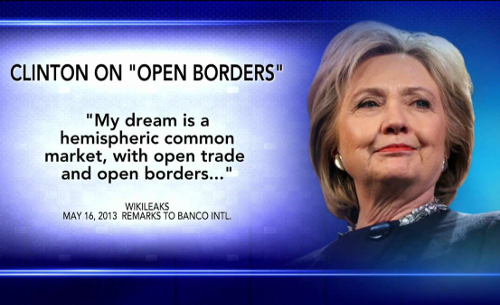
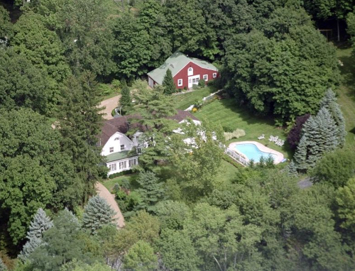
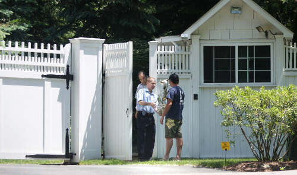
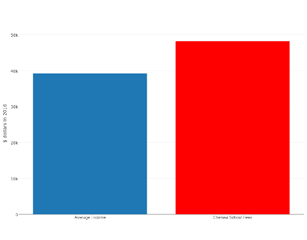
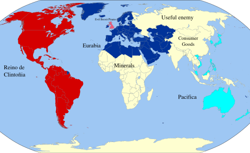
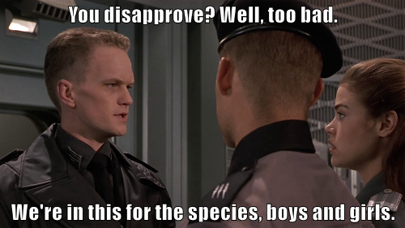

The World According to Clinton’s Email
Wikileaks has once again come up with some fantastic insights into how the elite run the world. Reading the different leaks from people associated with Hillary Clinton is fascinating. We are really getting a deep view into the globalist mindset.
The emails showing what Hillary was promising to her wall street donors are particularly enlightening.
If her actions and choices seem incomprehensible, you have understand that Clinton and her friends have a very different view of the world than us normal people. Especially those of us who hold to romantic ideas like God and country and loving your neighbours as yourself.
As always, click to enlarge the images.
Different crib
{kind=link}
If you think that Hillary’s best known house, the house in Chappaqua, is pretty reserved and tasteful for the elite, it is, but you have to remember that this is not a ranch in the middle of the Texan desert, it is at the end of a private road in the suburbs of New York City. It is a mega-great house.
{kind=link}
The house is surrounded by a large white wall, and a manned guardhouse stands by the entrance to the property. Yes, the anti-wall Clinton likes her own walls very much.
The red barn at the back is not for chickens, it is where her household staff and armed security are hidden away.
Meanwhile a small fleet of armoured vehicles provide suitable transport for any occasion.
{kind=link}
Different services
{kind=link}
In 2016 figures, the per capita disposable income of an American citizen is $39,190. Chelsea Clinton went to a school where tuition and fees cost $48,160 in 2016/2017. And yes, it has a massive green campus with a giant fence around it. The school campus makes Clinton’s house look like a hovel.
If Hillary doesn’t care about what provision is needed to handle mass immigration to inner cities, it is partly because she doesn’t need to use the overwhelmed schools or local services herself.
If Hillary seems a bit disrespectful towards the police, it is because she doesn’t need them, she has her own armed guards.
We can go on like this forever, so lets zoom out a bit.
Different Map
Almost every country has at least one thing to be proud of. As the British people, we are proud of our hard won freedoms and the communal institutions that our ancestors left us such as the NHS, our Royal Navy, our Royal family, our state school system, our ancient churches, castles, national parks and so on.
This means nothing to Hillary and their tribe, they are globalists because they are so rich they don’t want or need a nation state to look after them. From the first class cabin and the private jet, every country looks the same, the same hotel chains, the same exclusive shops, etc. The rich already live in a generic border free world.
If we draw a map of world according to Hillary’s email, it will look like this (map credit to Wikipedia, click on the map below to enlarge):
{kind=link}
{kind=link}
How to run the world
The power structures of the globalist world view are really interesting but also quite basic. There are four levers they have to control the world. I will explain this using the above map.
- Trade policy
To Hillary and her ilk, California is the capital of the world, eventually drawing all of the Americas into a “greater California”.
By combining this Reino de Clintoñia with its two major colonies of Eurabia and Pacifica, we have a giant and generic service economy, ready to serve the elite’s every desire.
All the trade agreements like TTIP, TPP and the EU are there to make sure the servants do not become too uppity and to remove any barriers to the maximisation of profits for Goldman Sachs bankers and the others who fund Clinton and her friends.
- Patronage
As well as unifying the legal and trade systems, patronage is used to keep potentially dangerous alternate power structures such as intellectuals, religion and the media on board. Internal ‘markets’ and competition for grants keep the universities, NGOs and charities as useful idiots spreading the globalist gospel.
It is important to create pseudo-scientific pretences of why this globalist neo-feudal system benefits the population more generally, as opposed to more Occam’s razor like solutions such as lets take the rich’s wealth away and use it to cure cancer.
This is also why the current move towards cultural Marxism and identity politics suits the elite so well. David Cameron and the American democrat/republican one party state are happy to hand out gay marriage because it doesn’t cost them any money. Here have all the pronouns you want, just don’t ask for decent housing for the poor, infrastructure or services.
- Consumer goods and entertainment
2000 years ago, the Roman writer Juvenal coined the phrase ‘panem et circenses’ (bread and circuses) to explain how the elite kept the masses under control.
The classical theory of why the Roman empire fell includes the observation that through insecurity of trade routes and inflation, Rome stopped being able to provide affordable consumer goods to the people.
The global leaders today do not make the same mistake, they keep their servant class in check by exploiting the poor of the world. They keep Chinese goods cheap, and if the Chinese get sick of making plastic crap for the world, they keep plenty of other Asian countries poor as a backup, after that there is Africa, which is currently just used as a giant shop of minerals to be exploited.
[I have talked a lot lately in this blog about how Africa bears the brunt of the current system of world trade, so I don’t want to sound like a broken record, needless to say, every trade deal they make always includes massive tariffs against Sub-Saharan African countries.]
Meanwhile, we are in an entertainment golden age, no end of TV shows, films and sports are provided to keep the minds of the servants busy. While there is an attempt to reclaim costs to pay the cast and crew and so on, unauthorised distribution of media is rampant and tolerated as only thing worse than the people watching unauthorised TV is the people not watching it.
If the mainstream media is rejected by the people, then a major form of control is lost, thus the mad dash to control and censor the Web.
- Useful enemy
Whenever Clinton and other Western politicians get into trouble, Russia and a few other useful enemies are wheeled out as a useful excuse for pretty much anything.
There is a Goldilocks zone for useful enemies, not too big and not too small, Putin was getting too big for his boots so sanctions were used to make Russia’s GDP smaller than Australia, meanwhile Iran was on the verge of total collapse so Obama and Clinton recently removed its sanctions and bailed out the regime with billions of dollars.
Another way
We are finally at a level of technology where we can in our lifetimes, foresee a future free of disease, want or waste, where robots do the work and people are free.
After the Attack on Pearl Harbor, when FDR decided to pursue a war across two oceans, the US had no ability to fight a major foreign war on one front, let alone two. Yet he pulled everyone together, rich and poor, black and white, and together they got the job done.
Setting a national goal and putting the resources of the whole society into it can achieve massive things:
“I believe that this Nation should commit itself to achieving the goal, before this decade is out, of landing a man on the moon and returning him safely to earth.”
When JFK said the above quote, they had a general idea of the physical principles but no practical clue how to achieve it. We now know far more about cancer and other diseases than we knew about the moon in 1961.
I want a leader that says we will commit ourselves to curing cancer in ten years, to curing type 1 diabetes, to ending asthma in children.
I want a leader that says we are going to digitise our cars so that in five years time, the number of child deaths on the road is 0.
I want a leader that says we will build a house for every person who needs one, even if we have to take away a little land from wealthy estates.
What is not important
{kind=link}
The whole reality TV side of things I don’t really care about. I don’t care if Jeremy Corbyn doesn’t wear a tie or Boris Johnson has made inappropriate jokes about foreign dictators. I don’t care if Labour MPs feel unhappy with Corbyn’s management style or Theresa May is alienating the 48% (which is now more like the 13% according to the latest polling but lets not get off track).
I do think it is somewhat odd that almost all of the Labour shadow cabinet come from London while almost all of the Tory Cabinet come from the home counties, but if they were the best people they could get, then I guess I don’t care.
I don’t care if Trump said something sexist 20 years ago, I don’t care if he makes his staff lose weight, I don’t care what he did when we was a billionaire playboy and a businessman.
I don’t care that the Clintons have a weird open marriage where, to use Hillary’s own terminology, she has to herd around Bill’s discarded ‘bimbos’. I don’t care how much Hillary swears in her emails. I don’t care she called her own party “a bucket of losers.” I don’t care if she coughs constantly for 8 years in a row.
I don’t care about temperament, I don’t care about who is the best manager. I don’t care who is the best husband or wife or mother or father.
I just want them to put these lilliputian tabloid issues aside and have some real policies to do something worthwhile for the actual voters.
Champions not tokens
The lives of the elite and the normal people are divided as never before. However, we don’t need leaders who feign the common touch. We don’t want token leaders, we want champions of the people.
Churchill was born into vast wealth, he was a drunk who gambled away the wealth of two great families and said many outrageous and sexist things, he would have probably been called deplorable and irredeemable by Hillary Clinton.
However, Churchill put all his privileged background and personal contacts into one aim, being the best military leader he could be.
When the time came that Britain was in the existential crisis of World War II, Churchill, being friends or related to much of the elite, knew exactly where their money was. The rich did not get off easy in cash terms and many of the Lordly estates were broken up. According to the national archives:
“a total of 14.5 million acres of land, 25 million square feet of industrial and storage premises and 113,350 holdings of non-industrial premises were requisitioned by the State.”
If we can raid the rich to defeat Hitler, can’t we raid them again to defeat cancer?